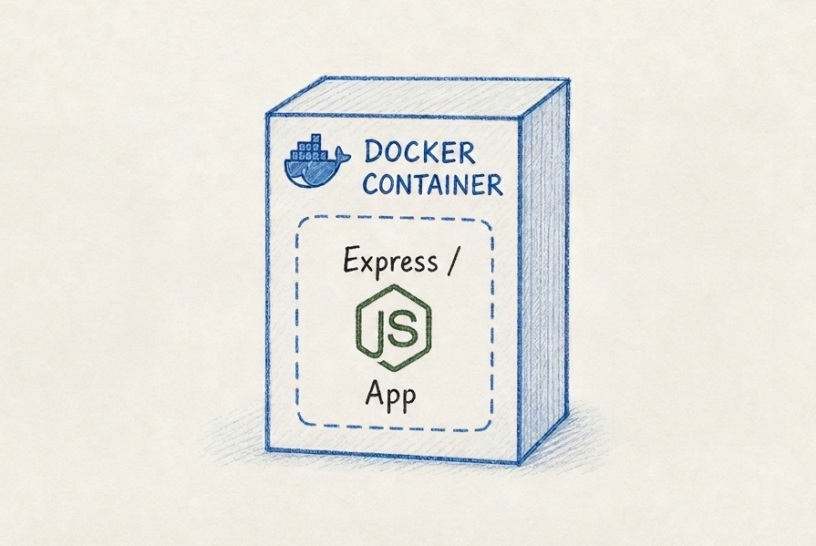

Supply chain attacks succeed by hijacking trusted tools and libraries.
Zero trust is necessary; any given community project may have hidden malicious scripts.
Build each development project within a Docker container
FROM node:24-alpine
RUN apk add --no-cache bash shadow curl \
&& curl -sSL https://github.com/tianon/gosu/releases/download/1.17/gosu-amd64 -o /usr/local/bin/gosu \
&& chmod +x /usr/local/bin/gosu
COPY entrypoint.sh /usr/local/bin/entrypoint.sh
RUN chmod +x /usr/local/bin/entrypoint.sh
WORKDIR /app
EXPOSE 3000
ENTRYPOINT ["/bin/sh"]
CMD ["/usr/local/bin/entrypoint.sh", "/bin/sh"]#!/bin/bash
set -e
USER_ID=$HOST_UID
GROUP_ID=$HOST_GID
EXISTING_GROUP=$(getent group "$GROUP_ID" | cut -d: -f1 || true)
if [ -n "$EXISTING_GROUP" ]; then
GROUP_NAME="$EXISTING_GROUP"
else
GROUP_NAME="npmuser"
groupadd -g "$GROUP_ID" "$GROUP_NAME"
fi
EXISTING_USER=$(getent passwd "$USER_ID" | cut -d: -f1 || true)
if [ -n "$EXISTING_USER" ]; then
USER_NAME="$EXISTING_USER"
else
USER_NAME="npmuser"
useradd -u "$USER_ID" -g "$GROUP_ID" -m -s /bin/bash "$USER_NAME"
fi
exec gosu "$USER_NAME" "$@"docker buildx build -t express-app-image .
docker run -p 3000:3000 -it -v "$PWD":/app -e HOST_UID="$(id -u)" -e HOST_GID="$(id -g)" express-app-imagenpm install express-generator
npx express-generator my-app
cd my-app
npm install
npm starthttp://localhost:3000